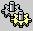

Parameters Command Line Arguments %1 %~f1 Env. Variables Create/read environment variables. Redirection Spooling output to a file, piping input. AND/OR Logic Conditional Execution (If-Then-Else) Loops Loops and Subroutines. functions How to package blocks of code. Macros Embed blocks of code in a variable. Services List of Windows 7 (SP1) Services.
Evaluate expressions
Using brackets to Group and expand expressions. Delayed Expansion Variables within loops. Escape chars, delimiters and quotes SET /A Environment variable arithmetic. VarSubstring Extract part of a variable (substring). VarSearch Search & replace part of a variable. RANDOM Random Numbers. Wildcards Match multiple files.
Shortcut Keys
Keyboard CMD Keyboard shortcuts. RUN commands Start | Run commands. MMC Snap-ins Admin commands. ms-settings Shortcuts to settings Shell: folder Shortcuts to key folders. ProfileFolders User profile folders: Start Menu, Roaming etc. Windows Key Windows Key Shortcuts
Example
Batch Files and functions
Run a script How to create and run a batch file. Banner Display a string of text in extra large letters. Elevate Run with elevated permissions (As Admin). DateMath Add or subtract days from any date. DeQuote Remove quotes from a string. DelOlder Delete files more than n days old. GenChr.cmd Generate an ASCII/Unicode character. GetDate.cmd Get todays date (any region, any OS.) GetTime.cmd Get the time now. GetGMT.cmd Time adjusted to Greenwich Mean Time. StampMe.cmd Rename a file with the date/time. StrLen Calculate the length of a string. tdiff.cmd Time difference in Hours/Minutes. timer.cmd Measure the run time of a script. Which.cmd Display full path to any command. xlong.cmd Find filenames that exceed the 256 char pathname limit.
Reference/How to
Autoexec Run commands at startup. CMD Shell Working in the Windows CMD shell. CMD Internal Commands that are Internal to the CMD shell. Compatibility Backwards compatibility - runas admin / color Slow Browsing Speed up network browsing. LAN Mgr auth NTLM authentication. Long Filenames NTFS filename issues. Display DPI Monitor size settings. File Shares Organising shared files. NoDrives Hide mapped drives from Windows Explorer. % vs %% Why you need to double the %'s in a batch file. Printing Printer connections and print drivers. Recovery The Recovery Console. Reg Tweaks Registry tweaks and settings. BuiltIn Groups Built-In Users and Security Groups. Groups Local Domain groups, Global and Universal groups. 64Bit Detect 64 bit vs 32 bit Windows.
Related:
Microsoft.com - Command-line Reference
Recommended books and Websites